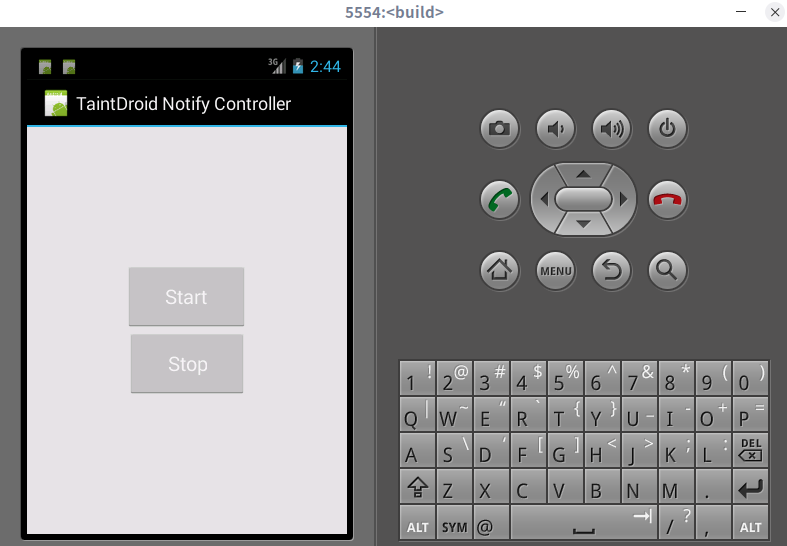
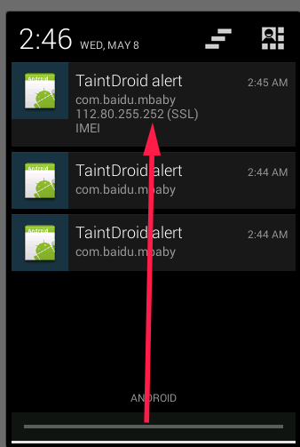

TaintDroid使用
这两天又有一个跑TaintDroid的需求，之前看过这个工具，但是都是在理论层面，还没有实际用过，正好趁这个机会跑一下。先简单说明一下，这个工具官方最高只支持到4.3，arm架构，我用虚拟机跑的，超级卡，但是最后还是run起来了。
部署
这个工具部署，其实算是简单的，但是我还是花了一整天的时间来整，走的弯路太多了，赶紧写下来。大的步骤其实就是：下载谷歌官方源码 –> 编译一下测试 –> 下载TaintDroid源码 –> 编译 –> 模拟器运行。
- 下载官方源码的步骤就不赘述了，网上太多了，就一定要4.3_r1的版本就行。
- 编译官方源码测试，为啥要这步呢，其实是不需要的，但是我在后面模拟器运行的时候直接黑屏了，但是那时候我不知道是我编译的TaintDroid有问题，还是模拟器配置的问题。这个时候要是我在官方源码下载完之后编译能成功用虚拟机运行，那就知道问题所在了，事实证明，还是我运行虚拟机的方式有问题。人嘛，在读书少的时候就喜欢瞎猜，当时我不知道问题出在哪，就乱找方案解决都无果，最后想起来是虚拟机运行的问题。所以如果你能把谷歌官方的编译镜像run起来，后面运行TaintDroid镜像就没问题了。
- 下载TaintDroid的源码，这步网上有很多参考资料，包括官方教程，无非就是改几个配置文件，repo sync，这里没有坑，直接照着步骤改就完事了。
- 之后就是到了编译的过程了，这里首先我碰到一个问题，就是编译到最后源码开始报错。这里说源码里找不到这个
getProvisioningOrActiveNetworkInfo方法，我去看了看，好像确实找不到，但是没有办法，就直接把调用这个函数的方法给注释了。。。文件在packages/apps/Settings/src/com/android/settings/WirelessSettings.java这个目录下，onManageMobilePlanClick这个函数，注释了好像也没啥大影响。后面一个错误也按照同样的方法来处理，注释完TaintDroid就没有编译错误了，成功生成了system.img等镜像。
1 | packages/apps/Settings/src/com/android/settings/WirelessSettings.java:106: cannot find symbol |
看到这几句就是编译成功了。
1 | Installed file list: out/target/product/generic/installed-files.txt |
- 运行虚拟机镜像。哎，这步是我困了最久的一步，以前我运行虚拟机镜像都是直接用安卓Studio的模拟器管理，创建一个版本相同的虚拟机，然后替换掉那个版本的system.img等镜像，然后直接run就行了。但是我这次这样做的时候，虚拟机直接黑屏，并不能启动，在找了各种资料之后，我才意识到官方教程里说的是直接用emulator启动，因为我编译都是在docker环境下编译的，并不能直接在docker中run，所以当时就没想着按官方的命令行启动，直接在AndroidStudio里运行了。话说回来，这个emulator命令，在source之后，lunch full-eng之后，就能用了，相关的环境变量都会给你配置好，我的AndroidStudio不能直接运行，我猜测是AndroidStudio的模拟器太新了，我看最低支持的内核也要3.10+，可能是这些原因导致不能正常运行，但是用源码中的emulator就没问题。
使用
开机之后就比较方便了，我碰到的一个问题就是不像AndroidStudio的模拟器能直接上网，这个模拟器一开始不能上网，查了一下，都说是DNS设置的问题，所以在启动模拟器的时候直接加一句设置DNS就能上网了。
emulator -dns-server 8.8.8.8,114.114.114.114
第二个是注意到官方文档中有说道，需要使用一个特定的内核以支持他的文件系统，就是Step 7: Obtain a kernel with YAFFS2 XATTR support (emulator only)中说道的。虽然我一开始没有指定，也能正常的运行了，但是为了功能完整性起见，还是把这个加上，按照链接下载，在运行的时候指定一个kernel参数
emulator -kernel '/home/blackmax/back_disk/WorkSpace/Taint_workspace/kernel-goldfish-xattr-2.6.29' -dns-server 8.8.8.8,114.114.114.114
之后就没什么坑了，在列表中找到TaintdroidNotify这个APP，开启通知。

接着安装一个会泄露IMEI之类的软件，这里随便安装了一个百度的宝宝知道，启动之后（有点卡，要等很久）就可以看到通知栏有检测到IMEI的泄露

总结
其实这个安装算是简单的，但是还是花了很久的时间去踩坑，好在最后能用，总的来说就是注意虚拟机运行的方式，其他就没什么坑的地方了